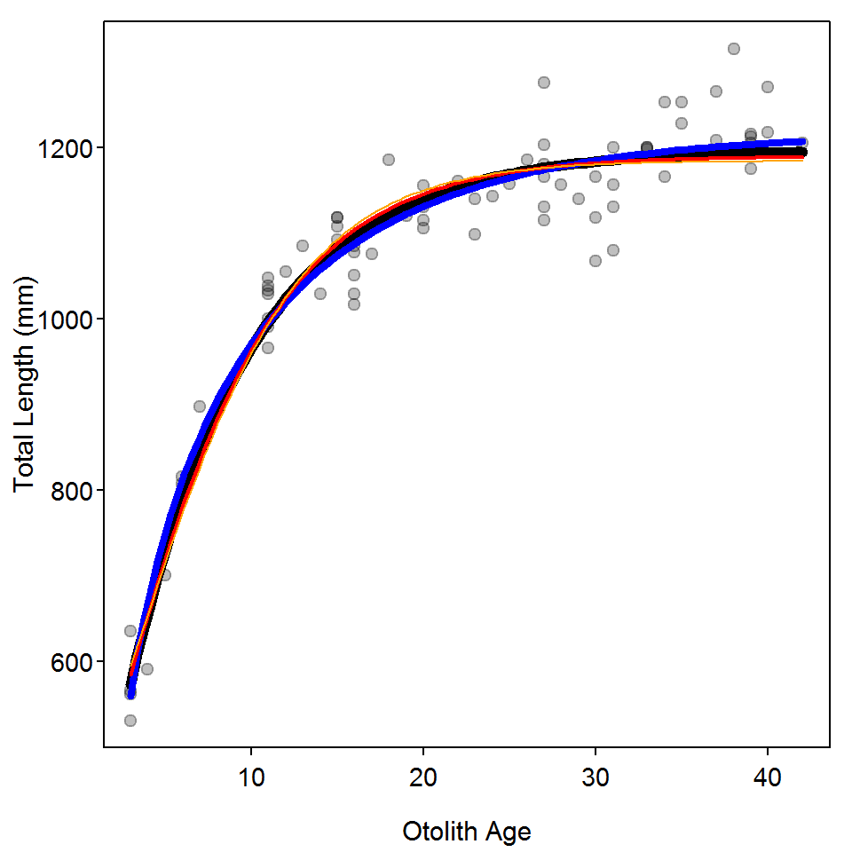

The von Bertalanffy Growth Function (VBGF) was introduced and methods for fitting the model were illustrated in the book. Other growth functions exist and are illustrated in this supplement. Methods for fitting other parameterizations of the VBGF are here and alternative nonlinear model fitting algorithms are illustrated here.
Functions used in this supplement require the packages shown below.
> library(FSA)
> library(dplyr)
> library(nlstools)
> library(AICcmodavg)The male Black Drum (view, download, meta-data) data used in the book will also be used here.
> bdmf <- read.csv("BlackDrum2001.csv") %>%
select(-c(spname,day,weight)) %>%
filterD(sex %in% c("male","female"),otoage<50)Loading required namespace: gdata> bdm <- filterD(bdmf,sex=="male")
> headtail(bdm) year agid month tl sex otoage
1 2001 1 4 787.5 male 6
2 2001 2 5 700.0 male 5
3 2001 8 5 1140.0 male 23
72 2001 122 5 1175.0 male 39
73 2001 125 6 590.0 male 4
74 2001 127 6 530.0 male 3Mean length-at-age has been modeled by functions other than the VBGF. Common other functions are the exponential, logistic, and polynomial (Ricker (1975)), as well as the specific functions of Gompertz (1825), Richards (1959), Schnute (1981), and Schnute and Richards (1990). The “Schnute” model and several parameterizations of the logistic, Gompertz, and Richards models have been coded in convenience functions in FSA. For example, the default parameterizations of the logistic, Gompertz, and Richards models are defined below. Again, include msg=TRUE for definitions of the parameters. Further note that the Richards model has four parameters.
> l1 <- logisticFuns()
> g1 <- GompertzFuns()
> r1 <- RichardsFuns()Unfortunately, convenience functions for finding starting values for each of these functions do not exist. Starting values can be obtained by iteratively superimposing a curve of the function at chosen values for the parameters onto a scatterplot of the raw data. This is demonstrated below for the Richards function. [Note that this may take considerable trial-and-error to find parameter values that provide a curve in the “neighborhood” of the data. Starting values likely only need to provide a rough fit to the data. However, I had considerable difficult finding starting values that would work with the Richards function for these data.]
> plot(tl~otoage,data=bdm,pch=19,col=rgb(0,0,0,1/4),
xlab="Otolith Age",ylab="Total Length (mm)")
> svR1 <- list(Linf=1200,k=0.1,a=1.1,b=0.4)
> curve(r1(x,unlist(svR1)),from=3,to=42,add=TRUE,lwd=2)Figure 1: Richards growth function evaluated at potential starting values superimposed on the length-at-age data for male Black Drum.
A similar process (not shown) was followed for the logistic and Gompertz models.
> svG1 <- list(Linf=1250,gi=0.15,ti=2)
> svL1 <- list(Linf=1250,gninf=0.15,ti=4)These models can be fit and summarized as illustrated above and in the book.
> fitR1 <- nls(tl~r1(otoage,Linf,k,a,b),data=bdm,start=svR1)
> bootR1 <- nlsBoot(fitR1)Warning in nlsBoot(fitR1): The fit did not converge 96 times during
bootstrapping> cbind(Ests=coef(fitR1),confint(bootR1)) Ests 95% LCI 95% UCI
Linf 1.216988e+03 1.188658e+03 1250.745301
k 9.419418e-02 6.553268e-02 0.142652
a 1.155605e+00 6.843045e-01 1.222718
b 3.793338e-01 2.732646e-01 1.191246> predict(bootR1,r1,t=3)prediction 95% LCI 95% UCI
562.3600 519.4399 600.2854 Information criterion can be used to identify which of these models best fits the male Black Drum data. First, the von Bertalanffy (as fit in the book), Gompertz, and logistic functions are fit to the data.
> vbTyp <- vbFuns()
> svTyp <- list(Linf=1193,K=0.13,t0=-2.0)
> fitTyp <- nls(tl~vbTyp(otoage,Linf,K,t0),data=bdm,start=svTyp)
> fitG1 <- nls(tl~g1(otoage,Linf,gi,ti),data=bdm,start=svG1)
> fitL1 <- nls(tl~l1(otoage,Linf,gninf,ti),data=bdm,start=svL1)These objects are then submitted to AICctab to provide a summary table. From this, the Richards models is most supported followed by the VBGF. The logistic and Gompertz models had little support, likely because they force an inflection point in the model which is not apparent in the data.
> aictab(list(fitTyp,fitL1,fitG1,fitR1),c("VBGF","logistic","Gompertz","Richards"))
Model selection based on AICc :
K AICc Delta_AICc AICcWt Cum.Wt LL
Richards 5 779.60 0.00 0.63 0.63 -384.36
VBGF 4 780.85 1.25 0.34 0.96 -386.14
Gompertz 4 785.34 5.74 0.04 1.00 -388.38
logistic 4 790.33 10.73 0.00 1.00 -390.88A plot of the best-fit model for each growth function (Figure 2) shows, however, that there is likely very little difference in predicted values among the four models.
> plot(tl~otoage,data=bdm,pch=19,col=rgb(0,0,0,1/4),
xlab="Otolith Age",ylab="Total Length (mm)")
> curve(vbTyp(x,coef(fitTyp)),from=3,to=42,add=TRUE,lwd=6)
> curve(r1(x,coef(fitR1)),from=3,to=42,add=TRUE,lwd=4,col="blue")
> curve(g1(x,coef(fitG1)),from=3,to=42,add=TRUE,lwd=2,col="red")
> curve(l1(x,coef(fitL1)),from=3,to=42,add=TRUE,col="orange")
Figure 2: Fitted models for the von Bertalanffy (black), Richards (blue), Gompertz (red), and logistic (orange) growth functions fit to the male Black Drum data.
Gompertz, B. 1825. On the nature of the function expressive of the law of human mortality and on a new mode of determining the value of life contingencies. Philosophical Transactions of the Royal Society of London 115:515–585.
Richards, F. 1959. A flexible growth function for empirical use. Journal of Experimental Botany 10:290–300.
Ricker, W. E. 1975. Computation and interpretation of biological statistics of fish populations. Bulletin of the Fisheries Research Board of Canada.
Schnute, J. 1981. A versatile growth model with statistically stable parameters. Canadian Journal of Fisheries and Aquatic Sciences 38:1128–1140.
Schnute, J. T., and L. J. Richards. 1990. A unified approach to the analysis of fish growth, maturity, and survivorship data. Canadian Journal of Fisheries and Aquatic Sciences 47:24–40.